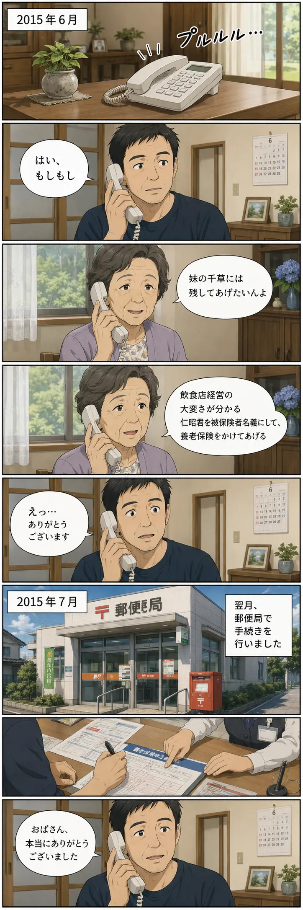
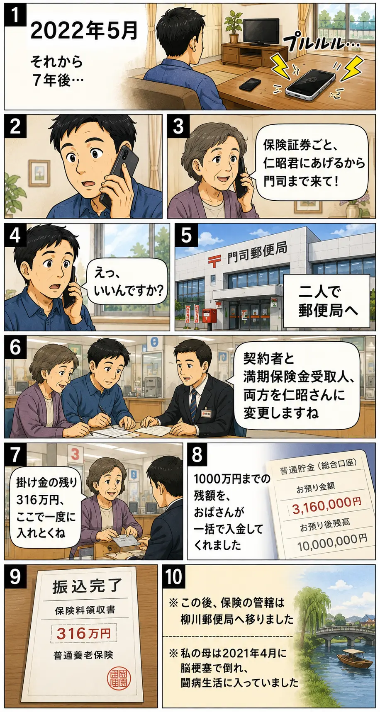
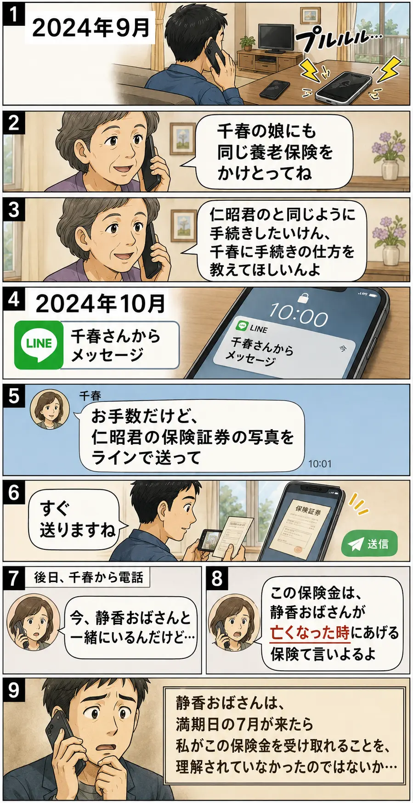
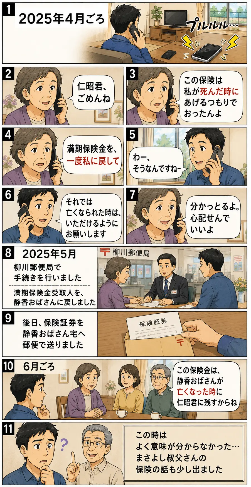
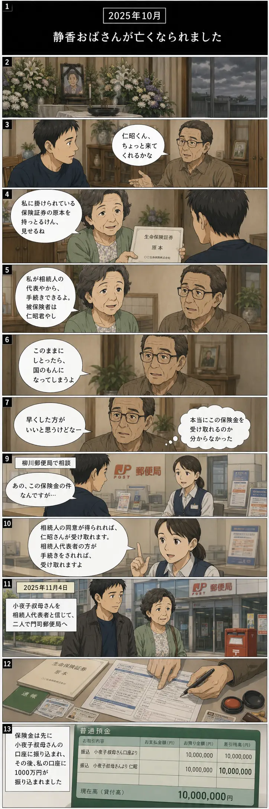
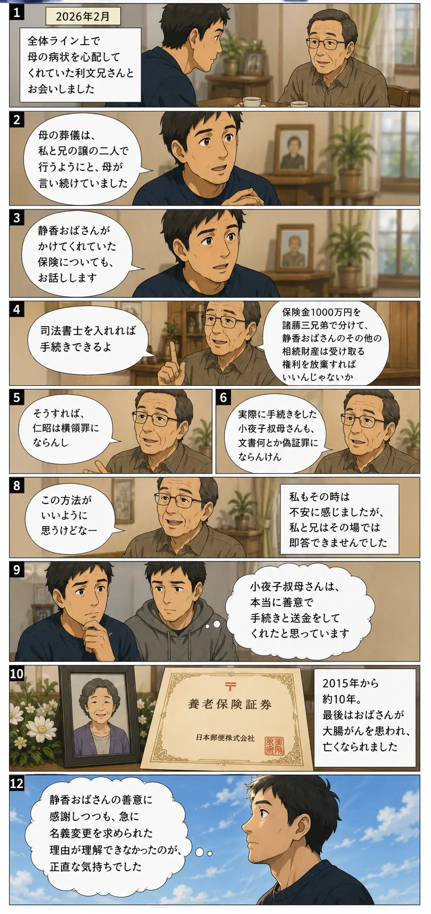

第 一 章
保険のはじまり
2015年6月 — 7月

images/ch01-hajimari.webpに配置してください';">
第 二 章
名義変更
2022年5月

images/ch02-meigi-henkou.webpに配置してください';">
第 三 章
誤解の発生
2024年9月 — 10月

images/ch03-gokai.webpに配置してください';">
第 四 章
名義を戻す
2025年4月 — 6月

images/ch04-modosu.webpに配置してください';">
第 五 章
静香おばさんの死と手続き
2025年10月 — 11月

images/ch05-tetsuduki.webpに配置してください';">
第 六 章
利文兄さんとの会話、振り返り
2026年2月 —

images/ch06-furikaeri.webpに配置してください';">